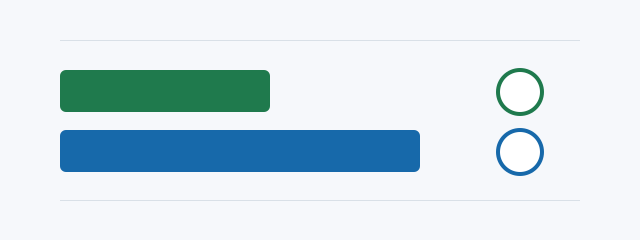

Бесплатный микроинструмент
Калькулятор экономики локального ИИ
Сравните сервер с API/облаком до покупки. Все расчёты выполняются в браузере; введённые данные никуда не отправляются.
Без аналитикиБез передачи данныхДопущения можно изменить

Decision model
Первичная модель, которая раскрывает допущения и не обещает финансовый результат.